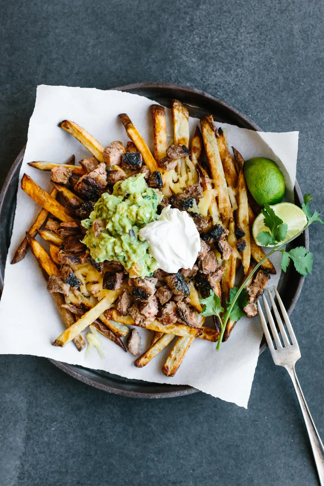

Carne Asada Fries

Description
Crispy french fries, thin and tender steak strips with layers of shredded cheese, yes please! Sour cream and guac, topped with chives, a night that we all need!
The things you'll need
- 2 teaspoons soy sauce
- 1 teaspoon salt
- 1 teaspoon ground black pepper
- 1 teaspoon garlic powder
- 1 teaspoon ground cumin
- 1 teaspoon chili powder
- 1 teaspoon Cajun seasoning
- 1 teaspoon lime juice
- 1 pound beef flank steak, cut into thin strips
- 2 cups oil for frying, or as needed
- 1 (16 ounce) package frozen French fries
- 2 ripe avocados, peeled and pitted
- 1 tablespoon guacamole seasoning mix
- ½ (8 ounce) package shredded Mexican cheese blend, or to taste
- ¼ cup sliced green onions, or to taste
- ¼ cup sour cream, or to taste
Directions to Heaven